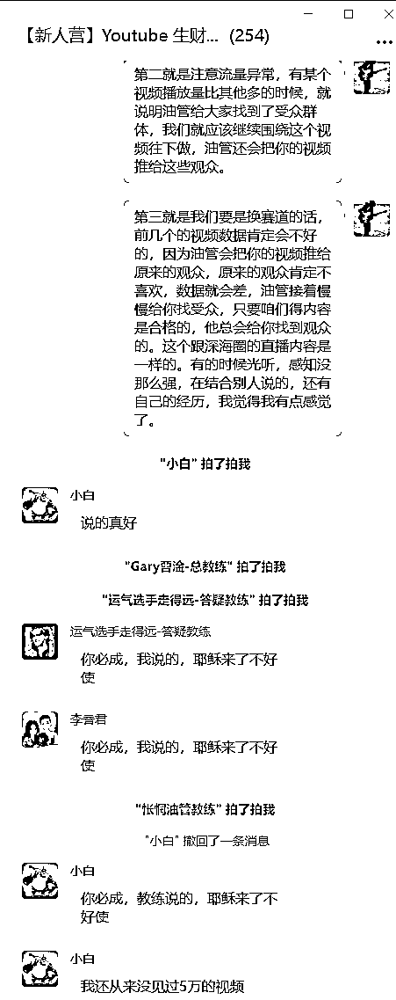

来源：https://evzhcmy02e.feishu.cn/docx/WeGidiN6boSwXPxYjFvcs5Bvn4e
凭运气，哈哈哈！<这是刚爆第一条视频，我开始写这个复盘帖子时候的想法.当时的标题为：一条视频达标ypp条件，我凭什么？。但是现在不了，因为在打磨帖子、打磨方法论的这两周里，我的频道已经超过一亿次的播放了.从万播到千万播放用了两个半月，从千万到亿播只用了半个月！） 大家好，我是 张强Numb，最近账号爆了一条九百多万的互动播放量的视频，然后这个视频爆了之后，其他视频播放量也水涨船高，目前累计已经够一千万了，接来就是耐性等待开通ypp了，趁着这口热乎气还在，给自己做个阶段复盘，记录这对于我来说历史性的一步.
我是2024年12月份，在可灵的用户群里，看见一个用户在群里分享了他的YouTube收益，我被震惊了，具体多少我记不得，就是高。我顺着截图找到了他的频道，就是他。虽然他现在不更新了，但是我还是没取关，他是我的启明星，后来参加航海，才发现，他也是大家的对标账号。
我一看他的shorts，这不就是首尾帧的人物变身吗，在拼接一些评委表情，我当时觉得很简单。然后尝试复刻了一下，用了两天时间，做出来一个非常简单的人物从胖变瘦的过程，就三张图，变了两次身。我就发出去了，上传之后是个位数播放，然后视频明明是4k的，但是上传之后很模糊，网上搜了一下，也没有找到解决方案，还有就是我勾选了面向儿童，我也不知道有错。
之后，我在小红书上做了一个视频，蹭外国人入侵小红书那个梗，爆了，2.1万的点赞，分发视频号，也爆了，这是第一条视频，大几十万的播放。我信心满满的转发YouTube，结果还是个位数播放，我被劝退了，但是我还有些不甘心，我需要参加一个专业的社群，这样解决问题更高效，因为我这些问题我知道都是最基础的，就是我没做过，我也在网上找答案很费精力。
社群，我第一个就想到了生财，我其实很早就知道生财，但是主业一直处于上升起，没有副业需求，就没加入。我年后试看一下生财，我发现正好生财推出了YouTube航海，太符合我的需求了，果断参加。
三月中旬参加航海之前，将有关YouTube的帖子都过了一遍，等待航海开始。航海开始之后，别的赛道我都没看，直接干达人秀变身，因为达人秀的观念先入为主了。
也正是达人秀，为我后面的焦虑埋下了伏笔。
整个航海期间，表现还算可以，从发出第三条视频开始基本播放量就能在3-5万左右，对应互动观看就是1.5-3万，说明作品是合格的了。
还有幸作为优秀船员做了一个分享贴。
3.30号-4.15号半个月一共发布了9个视频，这个期间，主要还是在探索，尝试了不同风格的达人秀，这种探索就很浪费时间，不同类型的单人秀可能用的图生视频的工具，都得自己尝试，
最后确定好了对标，但是，太卷了，之前的达人秀都是十几秒，二十几秒，一两个变身就完事了，这个对标账号，居然做到了快一分钟，而且，不是文生图那么简单，需要智能画布p图，还需要即梦的智能参考，局部改动作，图生视频也难搞，为了精细化的效果，要反复roll。一个完整的视频我都要花费五个小时左右。还有一个对标账号，我后来才知道是困困教练的。
4.15号航海结束了，我也再次断更了，我忘记为啥了，然后就是犹豫要不要报深海圈，我了解我自己，我这个人干啥都需要氛围，必须得沉浸里面才能持续干事。但是，有点纠结价格，现在看，太值了。正好主业来个私活，也正好六千块钱，尼玛啊，这就是命啊。两周晚上加班干完，拿钱，报名。
5.9号又重新起航，这时候回来一看，天塌了，对标账号更丝滑了，runway已经满足不了了，一看就是可灵了，依然每个视频都快一分钟的时长，我又开始探索了，这次的更难了，我每个视频都要8个小时才能做出来.主要是以下几个难点：
5.9号-5.20号，做了五个视频，这期间，很焦虑，太慢了，太耗费时间跟精力了，做出来的视频我觉得很美，但是内心得不到正反馈，就是太慢了。
这时候我还想坚持下去，因为我也想做成困困教练的那种精品号，这期间我也思考过，如果让我去做微创新，我其实是一点创意没有的，这个太吃创意了，肯定得跟ai对话交流，这样又是时间，但是没办法，就是得与失。
如果，我现在来复盘的话，我觉我的错误就是一直没有持续，这一类视频没做透彻，没有足够熟练。思维逻辑不够清晰。就停止了，然后又开始新的探索。所以一直效率提不上来。
5.20日发了视频之后，流量并不好，虽然我做的效果比之前要好，但是，流量上反馈很弱，我又尝试了做一个，但是没做完，因为对标账号，我有点复刻不了了，不能完全复刻，精髓复刻不出来，只能是阉割版。我有点痛苦，我有点做不下去了，但是那时候，不知道为啥，没有想试试别的赛道的想法，就一根筋了。
5.23日，我坐火车送孩子回东北老家避暑，也是想着趁孩子不在家的这一个月，再好好搞搞，就在回家的火车上，我无意间刷到一个赛道：印度故事。一个新起的号，十多条视频，条条大几百万，还有好几个大几千万，非常符合对标账号的要求。而且，制作难度很低，唯一我拿不准的就是图片跟图片之间的转场。我准备试试。
5.26日，回到北京，开始做印度故事，主要是探索图片跟图片之间的转场是用啥工具做的，试了一可灵，其实不试我也知道肯定不是可灵，因为故事的转场，无论是场景跟人物，差别太大了，可灵肯定是PPT的效果。我又试了runway，我感觉也不是runway，因为runway 首尾帧可以大幅度变，但是人物动作不会有很大幅度的跨越，我做达人秀变身的时候，这些东西都摸过了，但是runway生成的视频能对付用。不过我不满意，我想做到位，做到对标账号的效果。极致复刻。我在深海圈群里举手提问了，我觉得这个流量这么好，教练们肯定有做过的，我想直接知道答案，我不想在花费时间跟精力去试了。问完之后，运气教练提到了pixverse，如下图一 ，我也真的去试了一下，但是不知道为什么，我没什么感觉，转场效果也差不多，没有那种，啊，就是他的感觉，没有很感冒，不知道为啥，就像脑子短路了。
图一
图二
5.29一早，有圈友讨论我的问题，说是不是可灵做的，我犹豫要不要回复他，最后还是忍不住，我回了他一大段话，还有我用可灵出的视频发群里了，我这个回复太关键了，算是一个转折，把怅惘教练炸出来，等到了我想要的结果，就是那种坚定的感觉。见上图二。
但是接着怅惘教练说的成本问题给我交了盆冷水，成本太高了。但我转念一想，可不可以用可灵白嫖的方法，临时邮箱无限注册，白嫖免费试用，这时又出现了问题，我刚开注册的时候，临时邮箱可以注册，注册了两个之后，就不行了，就提示邮箱被注册过了，这时候，我不确定是邮箱的问题，还是说我注册了太多导致的，我又用我自己的好的谷歌邮箱注册也不行了。完了，当时就很紧张了，我远程家里的电脑试，也不好使。感觉刚看见了光，就又破灭了。我当时都想放弃了，我想用runway对付用了。
5.30，我去单位，又试了下，没想到，注册成功了。那就是临时邮箱质量的问题，我要解决的就是找到好的临时邮箱，我又去咸鱼上找pixverse无限积分的卖家，我找了好几个，终于找到了一个能用的临时邮箱网址，这个我在文末会告诉大家。就这点问题，折腾了大半天。心终于放下了。有希望了。但是在使用过程中，还有问题，就是注册后只有六十积分，只能用两次540p的，或者一次720p的，为了效率，只能捏着鼻子用540p的了，心想估计三哥们不会在乎。这会流程全打通了，端午节三天可以猛猛干了。
5.31-6.01端午三天，可以说是最痛苦，心态最崩溃的三天。 因为这时候我同步养了一新号，连着发两天的实拍了，已经有流量了，但是发了两个印度故事的作品。三天都是零播放。我心情很低落，再次被挫了，这几天，我压力很大，因为啥也没干。早上起来就做视频，一直做到晚上，做梦都是做视频。然后视频还没播放，我控制不住自己的情绪了，在深海圈群里寻求心里按摩，没想到教练们感知到我的情绪了，纷纷给我鼓励，还有解决办法。如下图一~三。
图一
图二
图三
图四
小圈教练的话，深深的触动了我，让我平静下来了，我太急了，太渴望正反馈了。接下来面对的问题就是重新起小号指定是来不及了，用我现在手里达人秀变身这个号，我还舍不得，因为我还是有执念，想做困困教练那个的ip的精品号。其实这时候无论对标账号，还是困困教练的号，流量都已经开始下滑了，这个流量数据的话，是没法开通ypp的，开不了ypp，一切都没意义。
痛定思痛，挣扎了一番，开通ypp之前，还应该以流量为主，这个思路后来也是得到了困困教练的认可，如上图四。
6.03日 圈友大臣，给我分享了这个视频，https://www.youtube.com/watch?v=LAn78RHRLYI&t=2s。又分享了一下他的感悟。这个视频我之前也看过，我又看了一遍。两点：第一点，对于小白来说，起一个号不容易，这个号的起号对应了大部分人的状态。我知道了一个人起号可能面临什么样的困难了。小圈教练说他六个月开通ypp，这个账号也是做了六个月，也是经历了很多挫折，无头苍蝇一样换了三四个赛道。我对着对起号的链路有了一些认识！第二点，关于油管的推流机制，其实他讲的，深海圈手册里已经讲过了，只不过看完视频，再看手册体感跟之前不一样了。
看完这个视频之后，我感觉我悟了，我感觉我似乎融入进来了，然后我就在深海圈群里发了下面这段话，得到了圈友，教练们的鼓励。
《https://www.youtube.com/watch?v=LAn78RHRLYI&t=2s大家有时间可以看看这个视频，我觉得特别好，尤其是结合咱们深海圈的直播，第一就是对于咱们这种新人来说，起一个号肯定是要经历波折的，重要的是要坚持，加不断尝试，我看as教练的帖子也是他转了第三个赛道，才拿到的结果，结合我自己的情况，就是我三月份的时候做了十个达人秀视频，都是三五万的播放，说明我的视频质量是可以的，但是我停更了，没有等到第一波推流。所以我错在没有继续跟新，第二就是注意流量异常，有某个视频播放量比其他多的时候，就说明油管给大家找到了受众群体，我们就应该继续围绕这个视频往下做，油管还会把你的视频推给这些观众。第三就是我们要是换赛道的话，前几个的视频数据肯定会不好的，因为油管会把你的视频推给原来的观众，原来的观众肯定不喜欢，数据就会差，油管接着慢慢给你找受众，只要咱们得内容是合格的，他总会给你找到观众的。这个跟深海圈的直播内容是一样的。有的时候光听，感知没那么强，在结合别人说的，还有自己的经历，我觉得我有点感觉了。》如下图一

图一
图二
图三
我用达人秀的账号发了第一个印度故事，播放量很低，但是我不在乎，我知道平台要重新给我找观众了，换赛道肯定是这个结果
接下来，我就发现，我开始有思考了，思路也打开了，开始在群里输出我想的想法了，如上图二~三.
等我第五个印度故事发布之后，我就感觉不一样了，早上起来， 推了十万，互动播放五万，数据异常了，但是我没敢群里分享，我心思等到互动播放上了十万的，那样也算上了一个播放实打实的上了一个台阶，那样我就很高兴了，因为在我的认知里，流量十万一个阶段，然后是百万，最后是千万。
很快就十万了，我期待已久的正反馈终于来了，虽然只是一小点的进步，但是一切都在向好的方向发展，我在群里分享喜悦了，如下图一
图一
图二
图三
但是没想到这只是一个开始，下午一点的时候，互动播放就到了五十万，下午四点直接突破一百万，我没想这玩意流量来了，会这么猛，赶紧群里报喜，如上图二。最后这个视频播放量定格在了九百五十万，上图三。
这条视频是我像素级复刻对标账号的爆款，对标账号是大概七千万的互动播放。
至此，我的故事就讲完了。
（当时写完这篇帖子的时候，我以为我就直接等待开通ypp了，没想到我的频道高级权限，卡了我半个月，这半个月，我试了很多办法，也得到了很多人的帮助，但是就是没找到开高级权限的办法，始终让我积累频道，眼看着错过了一个亿的播放收入，内心相当挣扎，一度要放弃这个账号，重新开始起第二个号了。但是有一天，我忽然想起了Gemini，因为他最懂谷歌了，在我的追问下，他最终给出了解决问题的办法：就是在推特上@teamyoutube，说明问题，果然得到了解决。）
波妮教练帮我想办法
Gary教练给我想办法，一小段截图。
Gemini给我的方法
之所以我这个视频能爆，我觉得有三点：
一，赛道选的好，还有流量，相对蓝海，而且我目前判断这个赛道不会没有流量，因为故事永不过时，只是表达形式会一点一点迭代。
二，我坚持做下来了，前期遇到那么多坎坷，我还是没放弃，包括后面开通高级权限，我问了很多人，做了很多尝试，持续了半个月，才解决问题。
三，我对对标视频的像素级复刻，对对标账号的数据分析，琢磨同类型观众爱看的元素点，以及出现爆款视频后的视频制作策略的研究。
对标账号 1.6亿播放
我的四百万
对标视频 三千万播放
我的视频 四百万播放
对标一
对标二
我的视频 两千万播放
还可以增加一些配音，音效等丰富自己的视频。
我选择了第一个方案，新开频道后，我直接发我作品的五秒片段，连着发七天，每个都有两千的基础播放，因为时间短，完播率高。积累了十个订阅，我再发作品的时候，给推了六万的播放。个人经验。有待大家验证。
一，部分工作流自动化，目前我图生视频这部分是很稳定的重复劳动，我现在需要用影刀做出来一个图生视频的机器人，一周内务必完成。这样每个视频都会节省一小时的工作量。是非常确定的提高效率的方法。
二，开第二个号，继续做这个赛道，如果说，能在一个月内达标ypp，那就说明这个赛道是个可以快速起号的赛道。
三，只对标，不原创。继续挖掘这个赛懂新的对标，爆款都是经过验证的脚本，直接抄。
目前我是看好这个赛道的，针对我现在ypp数量少的情况，我的策略是，用这个赛道快速开ypp，有了获利资格，在考虑赛道赚不赚钱的问题。
赛道的细分：
1.屌丝逆袭类。贫穷被嘲笑，被抛弃，然后通过自己的努力赚钱，逆袭。或者肥胖，弱小被嘲笑，通过锻炼逆袭。
2.家庭伦理类。小孩被抛弃，被穷人捡到，逆袭。或者儿媳妇嫌弃老人，抛弃，然后儿子在良心发现。找回老人。
3.出轨类。男人或者女人出差，另一个人找小三，最后被抓。
4.救援类。男人救女人，或者动物救人。
你会发现这些跟之前的达人秀，或者猫猫狗狗故事有相同的故事情节，或者爆款元素。都是反应最原始的人性，所以我觉得印度故事类赛道，不会没有流量，因为人性是永恒不变的。而且你的对标可以不用局限在印度故事这个赛道。所有的故事类赛道，都可以对标。
但是，他一定会是慢慢迭代的，呈现的内容会更加精细和丰富，因为现在就开始有这个趋势了，主要以下几个方面：
1.分镜头越来越多，时长越来越长。我开始做的时候是12个左右的分镜，大概四十秒，现在基本都是20个分镜，时长一分钟。
2.不再是简单pixverse生的转场类视频，开始大量加可灵的视频，这个就有点类似我达人秀变身视频的后期阶段。越来越丝滑。
3.配音更加丰富，一开始的时候，就是一首歌的背景音乐，现在开始加环境音，动作的声音等等。
最后就是性价比的问题了，如果说随着视频难度越来越大，耗费的时间跟精力增加，但是收益不变的情况下（因为毕竟印度人的rpm最低），那就有可能换赛道了。其实复杂点也更好，可以提高我们制作视频的水平，这种底层技能是不白练的。及时以后换赛道了，也会能更快上手。
这个临时邮箱可以注册pixverse，https://10minutemail.one/zh
注册好账号的话可以第二天用，这样会有120的积分，够用两次720p，不嫌弃540p的话，还可以用一次。
这一路走来，跌跌撞撞，坎坎坷坷，直到现在我的ypp流程还没走完，相对优秀的群友来看，我是慢的，但是我一直这么安慰自己，不怕慢，就怕站。
整个过程中，感谢航海期间的绮思志愿者，马可乐领队，及航海的教练。
感谢深海圈 Gary曹淦总教练，方波妮总教练，李香君教练和其他所有教练，还有一起并肩作战的圈友们。
感谢你们，是你们的一路陪伴，才让我能坚持走下来，真正入局。
感谢七天老师对本文的指导！